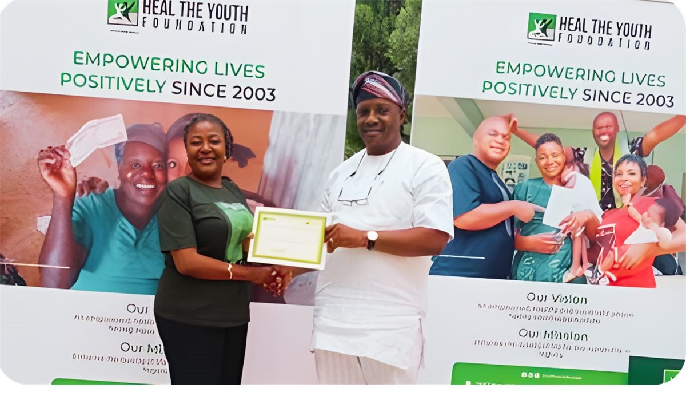

ACDRM is structured for the rigorous demands of multilateral partnerships and donor-funded programme delivery, grounded in a track record of real institutional engagement.
From validating Nigeria's first NEMA Strategic Plan to convening national policy dialogue, selected engagements led by ACDRM and its leadership, including the Refresh 1.0 Strategy Development Retreat (February 2024).

Delivered the strategic overview of Nigeria's first-ever NEMA Strategic Plan to agency management and key stakeholders, convened under the leadership of the Director-General, Mrs. Zubaida Umar.

Received a delegation from the Centre for the Study of the Economies of Africa (CSEA) and presented institutional publications on disaster management & humanitarian action, advancing ACDRM's research and policy engagement agenda.

Convened by Centre LSD and funded by Christian Aid Nigeria. Dr. Emenike Umesi served as Keynote Speaker and Panellist, addressing decolonisation frameworks and colonial mindsets in aid delivery.

At the Warri Leadership School (Centre LSD), Dr. Umesi delivered the principal address on leadership, institutional resilience, and strategic development to leaders from across the Niger Delta region.

ACDRM leadership in partnership engagement and recognition with development and community organisations, reflecting our commitment to collaboration at every level of the resilience ecosystem.

A foundational strategy development retreat (6-7 February 2024) shaping ACDRM's institutional direction, governance approach, and continental programme architecture.
ACDRM's flagship programmes are structured for engagement with leading multilateral, bilateral, and philanthropic partners.


Fund or co-finance flagship programmes such as ARDGI and the African Resilience Leadership Fellowship.
Commission governance diagnostics, policy design, and institutional strengthening for your agency or country.
Partner on applied research, risk profiling, and the Annual African Disaster Risk Report through the Observatory.
Governments, donors, and institutions, ACDRM is open for partnership.
Become a Partner →